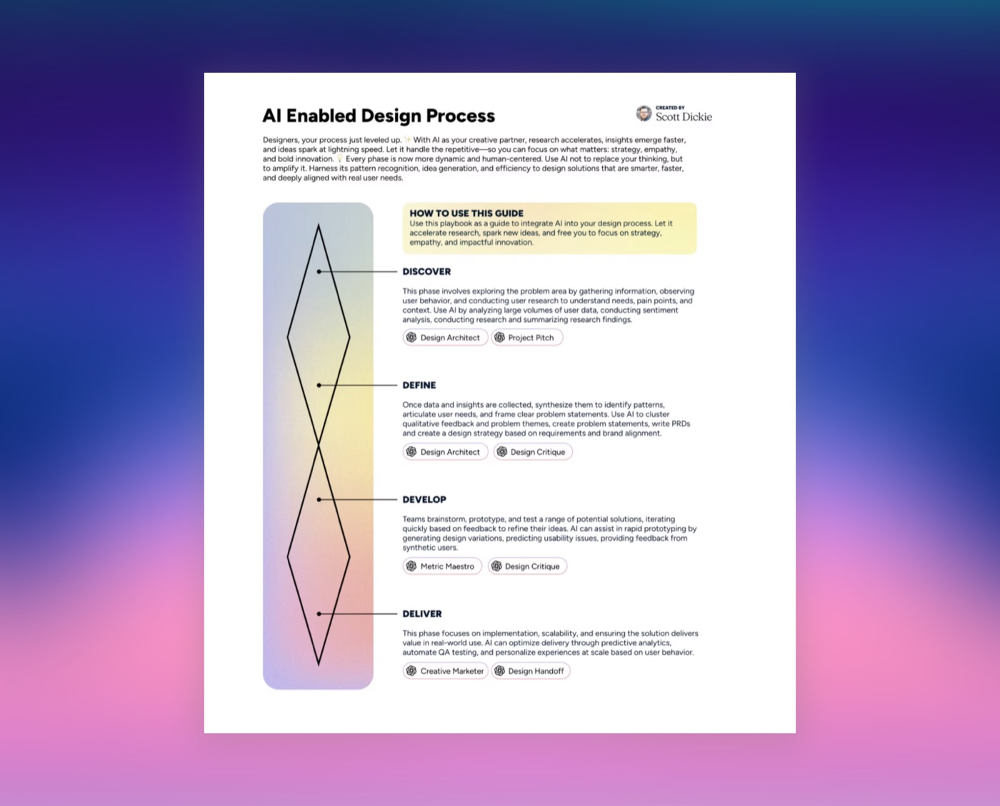
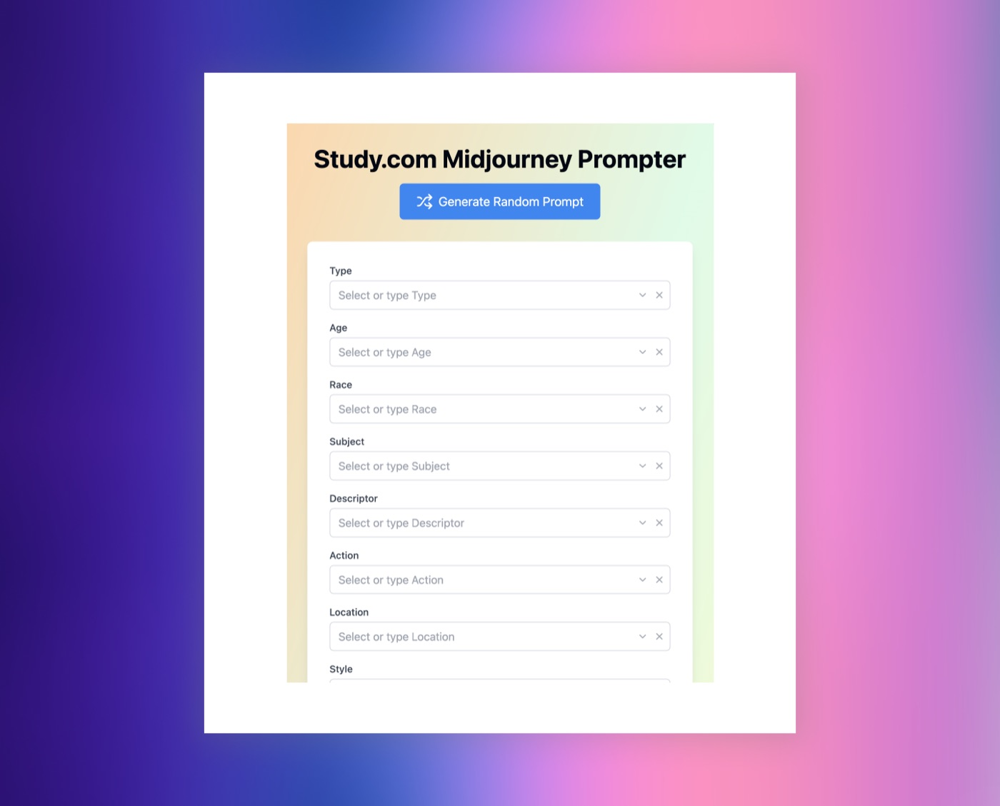
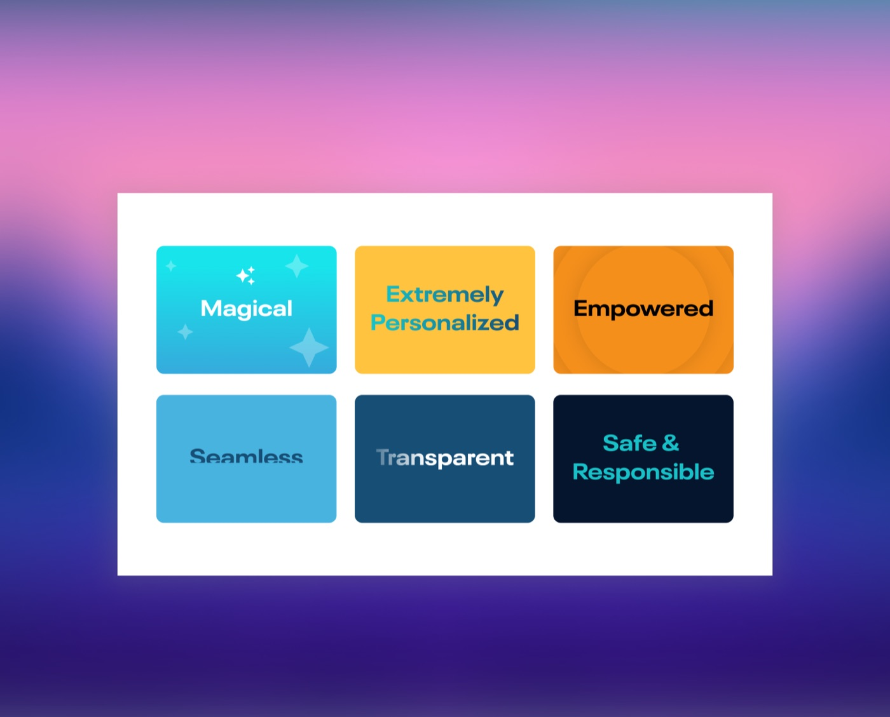

Scott Dickie
Scott Dickie
AI Initiatives to drive growth, quality and efficiency
I’ve led a range of AI initiatives from product as well as organizational/functional team process.
From a product standpoint, I’ve designed 0-1 AI native products, learning experiences with AI-driven personalization, and provided strategic input based on user research to increase AI adoption. These efforts have boosted user engagement, increasing weekly active users by 19% and improving learner retention by 14%.
From a team operations and organizational standpoint, I’ve transformed a team of AI skeptics to early adopters, automated image generation API workflows, and evolved my teams roles by introducing responsibilities from product management, research, UI development and QA.
Externally, I have been sought out to consult on AI strategy and adoption across organizations, advising executives on AI-driven market trends, customer needs, and optimizing internal processes through automation and AI-powered solutions.



Study.com AI Principles
These AI principles are essential to fostering trust, innovation, and meaningful impact in product development. Scott established these AI principles as guiding values to ensure AI-driven solutions are designed with user-centricity, trust, and innovation at their core. By embedding these principles across product, design, and engineering teams, I created a unified framework that drives responsible AI development while elevating user experiences and maintaining organizational integrity.
Agents & Workflow
Branded Midjourney Prompter
Fully customized based on branding guidelines, the prompter creates photography for each of our product lines and segments. Used throughout the organization from Marketing, Sales, Product, CS, Growth and maintained by the Design team.
Marketing & Copywriting
Developed several agents within Study.com’s infrastructure to automate copywriting across marketing (headlines, body copy, call to actions) and product (UI copy, error and success messages). Agents can be accessed in Microsoft Teams by anyone at the company.
Page Builder
The page builder is constructed from many agents and compiled together to create a landing page layout, copy and image direction.